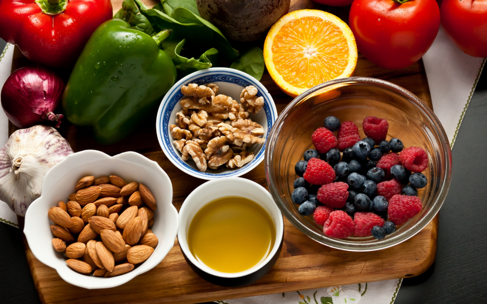

Healthcare • 3 min read
Newest from Health & Lifestyle
Wellness • 11 min read
The Role of Positive Thinking in Maintaining Good Health
Sarah McKenzie • Jun 11, 2022

Food • 6 min read
7 Foods That Fight Inflammation and Enhance Overall Health
Anna Maria Lopez • Mar 8, 2022
Lifestyle • 9 min read
How to Find Fulfillment and Happiness Through a Minimalist Lifestyle
Bob Jones • Apr 2, 2022
×
Proven Health & Lifestyle Hacks
Boosting energy levels both at home and work is essential for maintaining productivity and overall well-being. Here are several proven health and lifestyle hacks to help you achieve sustained energy throughout your day:
1. Prioritize Quality Sleep
Adequate sleep is fundamental to energy levels. Aim for 7–9 hours of restful sleep each night. Establish a consistent sleep schedule by going to bed and waking up at the same times daily, even on weekends. Create a relaxing bedtime routine, such as reading or taking a warm bath, to signal your body that it's time to wind down. Limiting screen time before bed can also improve sleep quality.
2. Maintain a Balanced Diet
Your diet significantly impacts your energy levels. Incorporate a variety of whole foods, including fruits, vegetables, lean proteins, and whole grains, to provide sustained energy. Avoid excessive consumption of processed foods and sugars, which can lead to energy crashes. Staying hydrated is equally important; even mild dehydration can cause fatigue. Aim to drink at least eight glasses of water daily.
3. Engage in Regular Physical Activity
Regular exercise enhances energy by improving cardiovascular health and oxygen circulation. Incorporate activities you enjoy, such as walking, cycling, or yoga, into your daily routine. Even short bursts of activity, like a 10-minute walk, can boost energy and improve mood. Exercise also promotes better sleep, further contributing to increased energy levels.
4. Manage Stress Effectively
Chronic stress can drain your energy and negatively affect your health. Implement stress-reducing techniques such as mindfulness meditation, deep breathing exercises, or engaging in hobbies you enjoy. Regular physical activity and adequate sleep also play crucial roles in stress management. Building a strong support network of friends and family can provide emotional support and help mitigate stress.
5. Optimize Your Work Environment
Your workspace can influence your energy and productivity. Ensure your work area is well-lit and ergonomically arranged to reduce physical strain. Take regular breaks to stand, stretch, or walk around to prevent fatigue. Incorporating plants into your workspace can improve air quality and create a more pleasant environment, potentially boosting energy and focus.
By integrating these strategies into your daily routine, you can enhance your energy levels, leading to improved productivity and a greater sense of well-being both at home and work.
×
The Role of Positive Thinking
Adopting a positive mindset can significantly enhance your overall health and well-being. Here are several strategies to cultivate positive thinking in your daily life:
1. Practice Gratitude
Regularly acknowledging the positive aspects of your life can shift your focus from negative to positive experiences. Maintaining a gratitude journal, where you list things you're thankful for each day, can foster a more optimistic outlook.
2. Engage in Positive Self-Talk
The way you talk to yourself influences your perception of situations. Replacing negative self-talk with positive affirmations can improve your mood and resilience. For instance, instead of thinking, "I can't do this," reframe it to, "I will give it my best effort."
3. Surround Yourself with Positive Influences
The people you interact with can impact your mindset. Spending time with positive, supportive individuals can encourage you to adopt similar attitudes. Engaging in uplifting conversations and activities can reinforce a positive outlook.
4. Focus on the Present Moment
Mindfulness practices, such as meditation, can help you stay grounded in the present, reducing anxiety about the past or future. By concentrating on the here and now, you can appreciate life's immediate joys and challenges, fostering a more positive perspective.
5. Set Realistic Goals
Establishing achievable objectives provides a sense of purpose and accomplishment. Breaking larger goals into smaller, manageable tasks can make them less overwhelming and more attainable, boosting your confidence and positivity.
Incorporating these strategies into your daily routine can lead to a more positive mindset, enhancing both mental and physical health. Remember, cultivating positivity is a continuous process that requires practice and commitment.
×
7 Foods That Fight Inflammation
Chronic inflammation is linked to various health issues, including heart disease, diabetes, and arthritis. Incorporating anti-inflammatory foods into your diet can help mitigate these risks. Here are seven foods known for their anti-inflammatory properties:
1. Fatty Fish
Fish such as salmon, mackerel, and sardines are rich in omega-3 fatty acids, which have been shown to reduce inflammation. Regular consumption can help lower the risk of chronic diseases.
2. Berries
Berries like strawberries, blueberries, and raspberries are packed with antioxidants called anthocyanins. These compounds have anti-inflammatory effects that may reduce your disease risk.
3. Broccoli
This cruciferous vegetable is rich in sulforaphane, an antioxidant that decreases inflammation by reducing levels of cytokines and NF-κB, which drive inflammation.
4. Avocados
Avocados are high in monounsaturated fats and contain carotenoids and tocopherols, which have been linked to reduced cancer risk. They also provide various beneficial compounds that protect against inflammation.
5. Green Tea
Green tea contains epigallocatechin-3-gallate (EGCG), a powerful antioxidant that inhibits inflammation by reducing pro-inflammatory cytokine production.
6. Peppers
Bell peppers and chili peppers are loaded with vitamin C and antioxidants with powerful anti-inflammatory effects. Chili peppers contain sinapic acid and ferulic acid, which may reduce inflammation and lead to healthier aging.
7. Mushrooms
Mushrooms are very low in calories and rich in selenium, copper, and all of the B vitamins. They also contain phenols and other antioxidants that provide anti-inflammatory protection.
Incorporating these foods into your daily diet can help combat inflammation and promote overall health.
×
How to Find Fulfillment and Happiness
Achieving fulfillment and happiness through fitness involves integrating physical activity into your daily life in a way that aligns with your personal goals and values. Here are some strategies to help you find joy and satisfaction through fitness:
1. Set Personal Goals
Identify what you want to achieve with your fitness routine, whether it's improving health, increasing energy levels, or enhancing mental well-being. Setting clear, attainable goals provides direction and a sense of purpose.
2. Choose Activities You Enjoy
Engaging in physical activities that you find enjoyable increases the likelihood of maintaining a consistent routine. Whether it's dancing, hiking, swimming, or playing a sport, enjoyment is key to long-term commitment.
3. Incorporate Mindfulness
Practicing mindfulness during exercise can enhance the experience and boost mental health. Focusing on the present moment, your movements, and breathing can make workouts more fulfilling.
4. Join a Community
Participating in group fitness classes or sports teams can provide social support and a sense of belonging. Sharing your fitness journey with others can increase motivation and enjoyment.
5. Celebrate Progress
Acknowledge and celebrate your achievements, no matter how small. Recognizing progress reinforces positive behavior and contributes to a sense of fulfillment.
By integrating these strategies into your fitness routine, you can create a more fulfilling and joyful experience that contributes to overall happiness and well-being.
Subscribe to our Newsletter
Get the latest updates, company news, and special offers delivered right to your inbox.